Theodore Roosevelt National Park Travel Guide
National park honoring U.S. President Theodore Roosevelt comprises three geographically separated areas of badlands in western North Dakota
General Information
South Unit Visitor Center (Medora): daily, hours vary seasonally (roughly 8am to 4:30pm, extended in summer)
Painted Canyon Visitor Center: open seasonally, generally spring through fall
North Unit Visitor Center: open year-round with reduced winter hours
Motorcycle: $25
Individual (foot/bicycle): $15
Accepts America the Beautiful Pass
How to Get There
From Dickinson (35 mi): Take I-94 W to exit 27 for Medora and the South Unit visitor center; the North Unit lies about 70 miles north via US-85 from Belfield, and the Elkhorn Ranch Unit is reached by gravel roads in between.
Overview
Theodore Roosevelt National Park protects three separate areas of rugged badlands along the Little Missouri River in western North Dakota, and it is the only national park named directly for a single person. The painted canyons, buttes, and rolling prairie of the park are the landscape that shaped Roosevelt, who came here in 1883 to hunt bison and later said that he would not have become president without his experience in the Dakota Territory. Wildlife is abundant, with bison, wild horses, elk, and prairie dogs seen from the road, and the park's quiet and open space make it a standout destination in the northern Great Plains.
After Roosevelt's death in 1919, the Civilian Conservation Corps developed the badlands, and the area became Theodore Roosevelt National Memorial Park in 1947, becoming a national park in 1978. People visit for the scenic drives, the wildlife, the hiking and horseback riding, the dark skies, and the history of Roosevelt's ranching years, as well as the nearby tourist town of Medora, which is known for its Western atmosphere and summer musical.
Park Sections
The park has three units. The South Unit, next to Medora, is the most visited and has the main visitor center, the restored Maltese Cross Cabin, and the 36-mile Scenic Loop Drive. The North Unit, about 70 miles north near Watford City, is quieter and more rugged, with a 14-mile scenic drive. The remote Elkhorn Ranch Unit, in between, preserves the site of Roosevelt's second ranch, where only the foundations remain, and is reached by a dirt road and a river ford. The Maah Daah Hey Trail, a long-distance trail, connects the units.
Sightseeing and Exploring the Park
The 36-mile Scenic Loop Drive in the South Unit passes colorful badlands, prairie dog towns, and overlooks including Wind Canyon and the Boicourt Overlook, and gives a good chance to see bison, wild horses, and elk. The Painted Canyon Overlook, off I-94 about 7 miles east of Medora, has a view across a broad badlands canyon and a seasonal visitor center. In the North Unit, the scenic drive follows the Little Missouri River to the Oxbow Overlook, with views over the river valley. Both roads are paved, and cars, RVs, and bicycles use them, though winter storms may close them.
Hiking
The park has about 100 miles of trails. Easy walks include the 0.4-mile Wind Canyon Trail, which climbs to a view of the river, and the short Coal Vein and Ridgeline Nature Trails in the South Unit. The Caprock Coulee Nature Trail in the North Unit is a moderate 1.5-mile loop. Longer routes include the Petrified Forest Loop, a roughly 10-mile hike to petrified wood in the South Unit, and the Lone Tree Loop in the North Unit. Hikers can also go off-trail in most areas. The long-distance Maah Daah Hey Trail runs about 144 miles through the badlands, and the Buckhorn Trail is a favorite for horseback riders. Carry water and watch for rattlesnakes and bison.
Other Activities
The park is known for horseback riding, and guided rides are available from outfitters in Medora. Visitors also canoe or kayak the Little Missouri River, fish, camp, and take part in ranger programs and stargazing, as the park has very dark skies. In winter, snowshoeing and cross-country skiing are possible on the roads that are closed to cars. Medora, at the South Unit gateway, has the nightly Medora Musical in summer, a cowboy hall of fame, museums, and restaurants. There are no cave tours or boat outfitters in the park.
Flora and Wildlife
Wildlife viewing is the main attraction. Free-roaming bison are the most visible, along with wild horses, elk, pronghorn, mule deer, white-tailed deer, coyotes, and bighorn sheep, especially in the North Unit. Prairie dog towns along the Scenic Loop Drive in the South Unit are easy to see from the road. Birds include meadowlarks, golden eagles, and sharp-tailed grouse. The landscape is mixed-grass prairie, with cottonwoods along the river, juniper on the slopes, and wildflowers in spring and early summer. Keep a safe distance from bison, which are dangerous. Viewing is on your own from the roads and trails.
Access
The South Unit is reached by I-94 exits 24 and 27 at Medora, about 135 miles west of Bismarck, a drive of roughly 2 hours. The North Unit is on US-85, about 15 miles south of Watford City, around 70 miles north of Medora. Billings, Montana, is about 4 hours west. The nearest airports with commercial service are Dickinson, Bismarck, and Williston, and Bismarck has the largest service. There is no public transportation, and the park is reached by car or by Amtrak's Empire Builder, which stops in Williston.
Seasons
Summer is the most popular season, with warm days, thunderstorms, and long daylight, and the Medora Musical. Spring brings wildflowers and baby animals, while fall has golden cottonwoods, cooler weather, and elk bugling. Winter is cold and snowy, with temperatures far below freezing, and the Scenic Loop Drive and North Unit road can close after storms; the park is open all year, but services are limited. Roads can be muddy after rain. The Painted Canyon visitor center is open seasonally, and some campgrounds and programs are available only in summer.
Camping and Lodging
The park has two developed campgrounds: Cottonwood Campground in the South Unit and Juniper Campground in the North Unit, and backcountry camping with a permit. There is no lodging in the park. In Medora, lodging includes the historic Rough Riders Hotel, the Badlands Motel, and several motels, cabins, and campgrounds. Dickinson, about 35 miles east of Medora on I-94, has the widest choice of chain hotels. For the North Unit, Watford City has hotels and motels, and Williston is about an hour away.
Visitor Centers
The Medora Visitor Center in the South Unit, next to the Maltese Cross Cabin, is the main visitor center, with exhibits on Roosevelt's life in the badlands, a film, a bookstore, and rangers. The Painted Canyon Visitor Center, off I-94, is open seasonally and has views of the canyon. The North Unit Visitor Center has exhibits on the area's history and wildlife, and rangers who can advise on trails and conditions. Hours vary by season, so check the National Park Service website.
This article uses material from the Wikipedia article "Theodore Roosevelt National Park", which is released under the Creative Commons Attribution-Share-Alike License 3.0. Additional information comes from the National Park Service Theodore Roosevelt National Park website.
Featured Locations
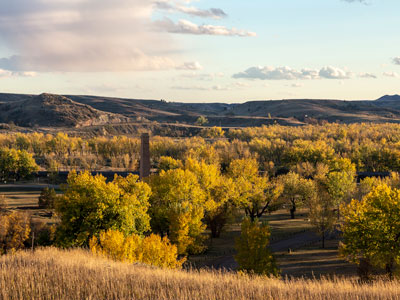
Acroterion, CC BY-SA 4.0, via Wikimedia Commons; Image Size Adjusted

Medora, ND
Historic western town known for its preserved frontier heritage, outdoor recreation, cultural attractions, and proximity to scenic badlands landscapes.

National Park Service; uploaded by User:Finetooth, Public domain, via Wikimedia Commons; Image Size Adjusted

North Unit
Remote badlands landscape featuring scenic overlooks, rugged canyon terrain, wildlife viewing, prairie ecosystems, and backcountry hiking opportunities.

Acroterion, CC BY-SA 4.0, via Wikimedia Commons; Image Size Adjusted

South Unit
Expansive badlands landscape featuring scenic drives, rugged hiking trails, prairie wildlife, dramatic canyon overlooks, and historic sites connected to early conservation history.
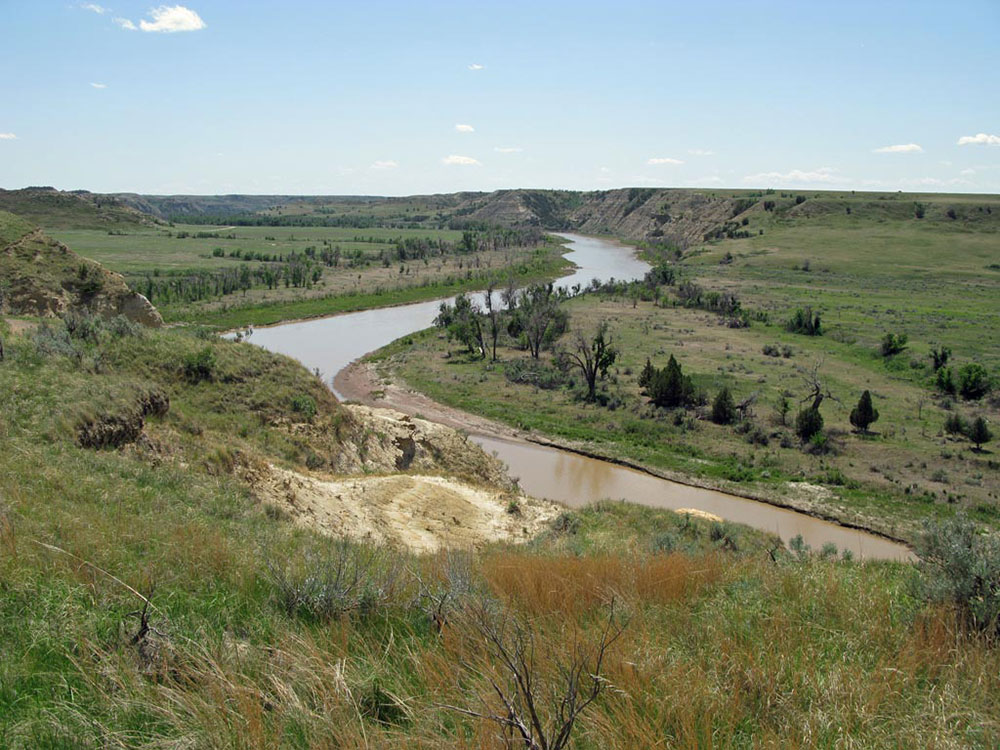

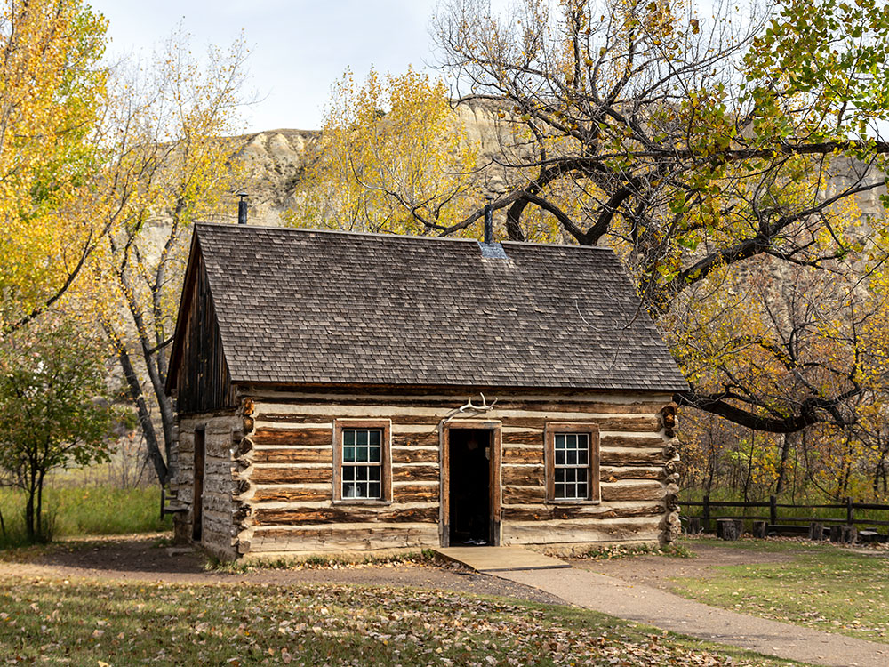

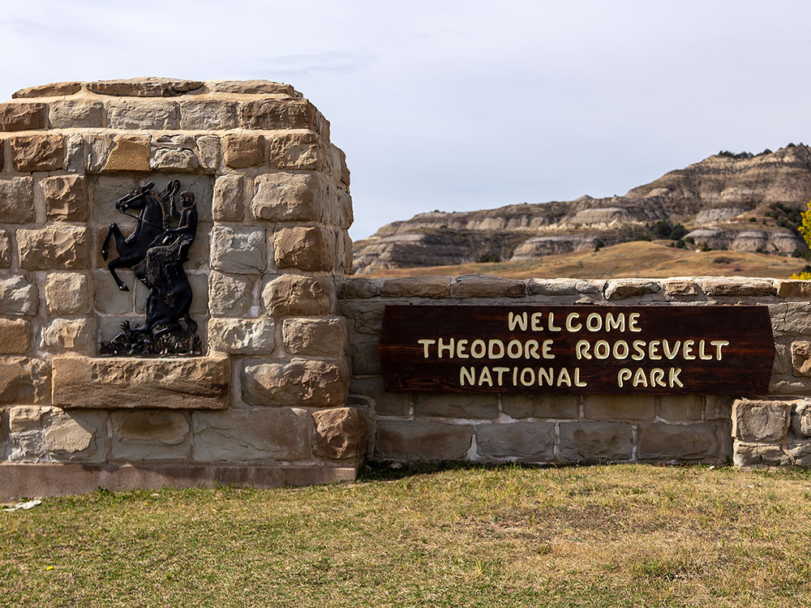

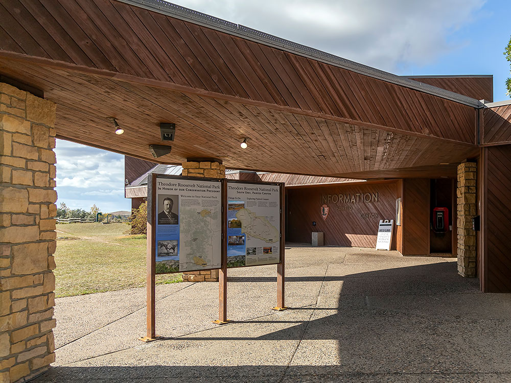

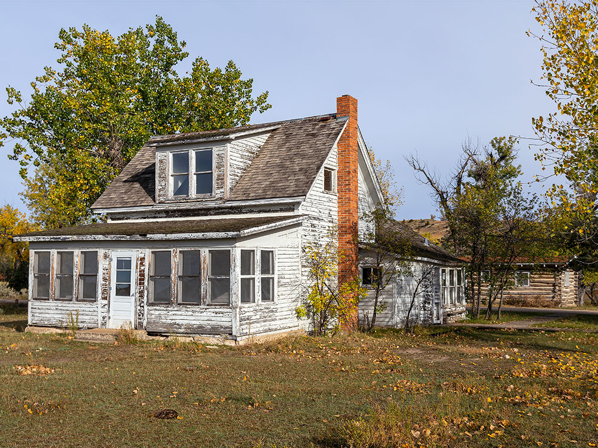

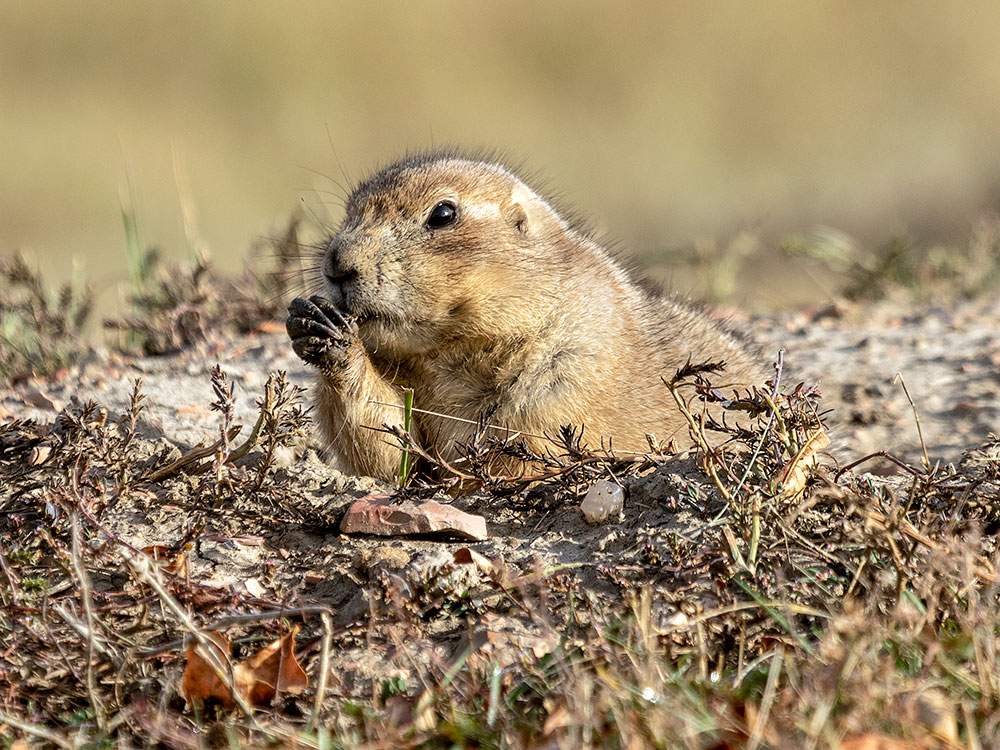

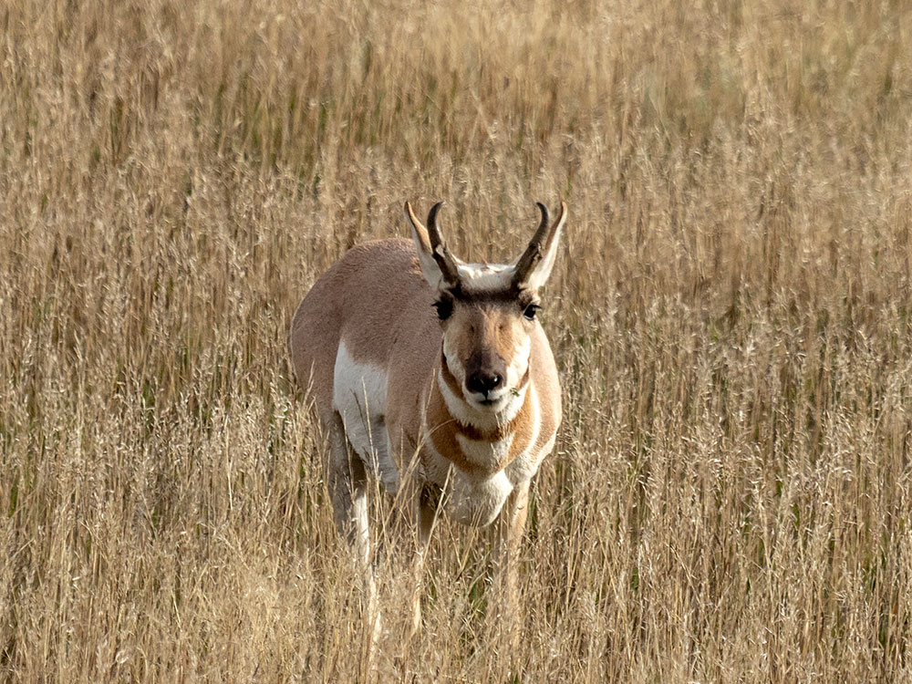
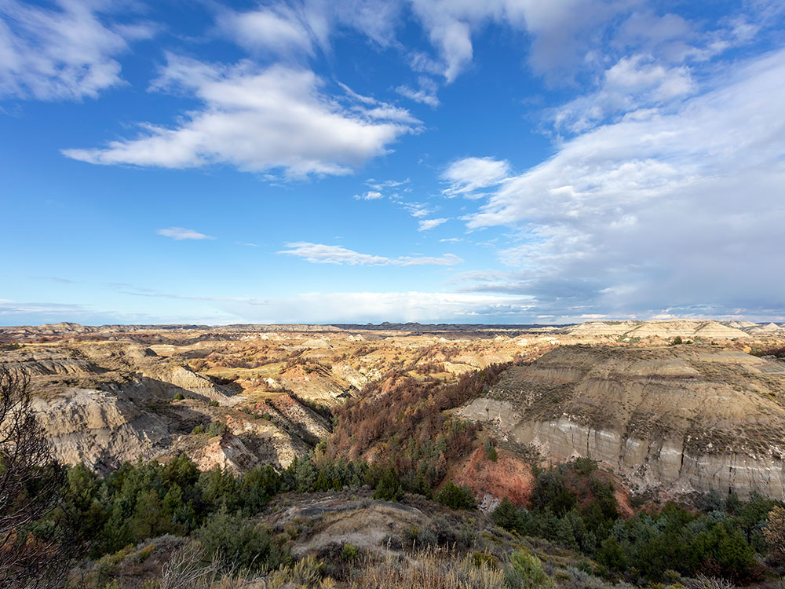

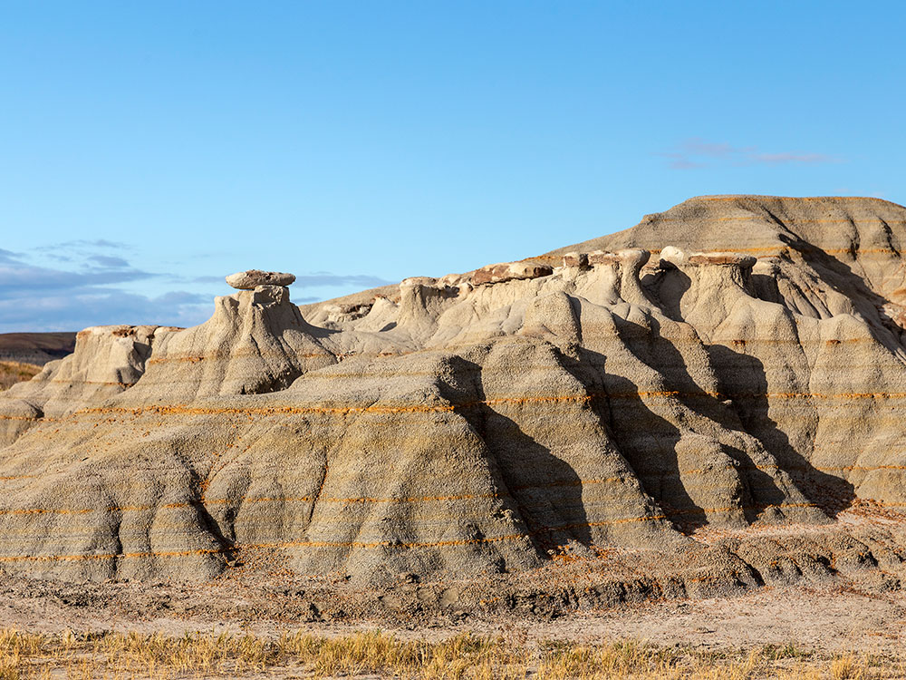

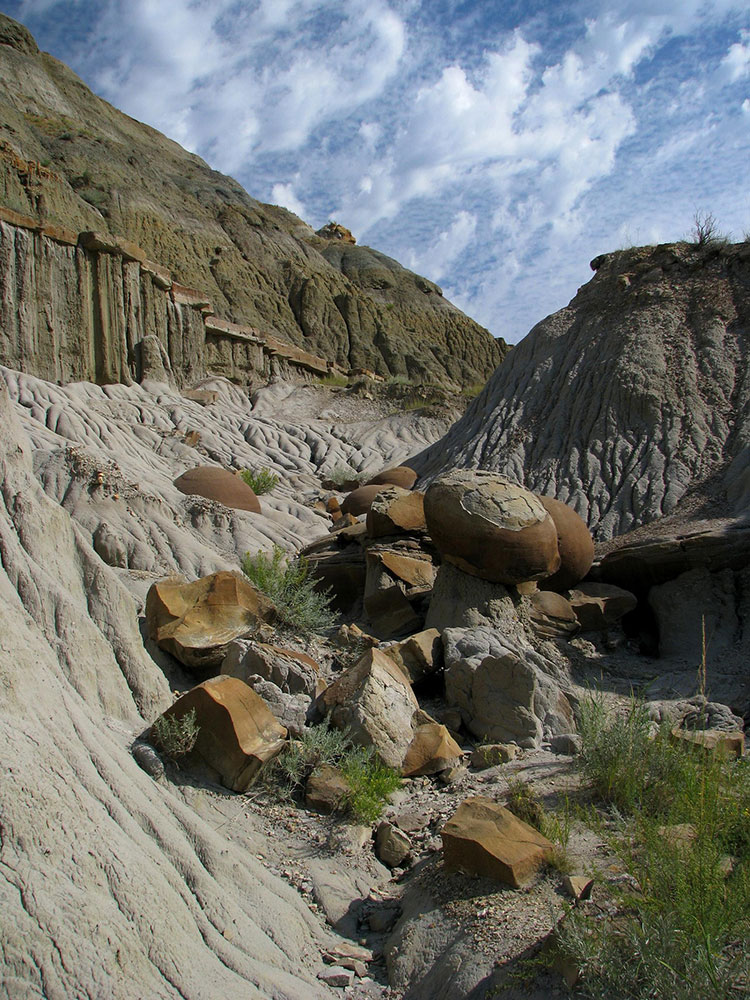